Introducción a docker¶
Generalidades¶
Imprescindibles¶


Arquitectura¶
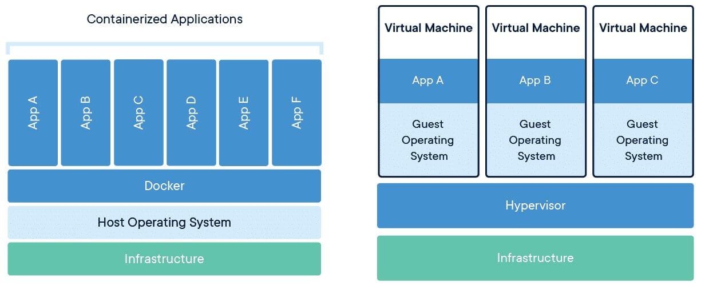
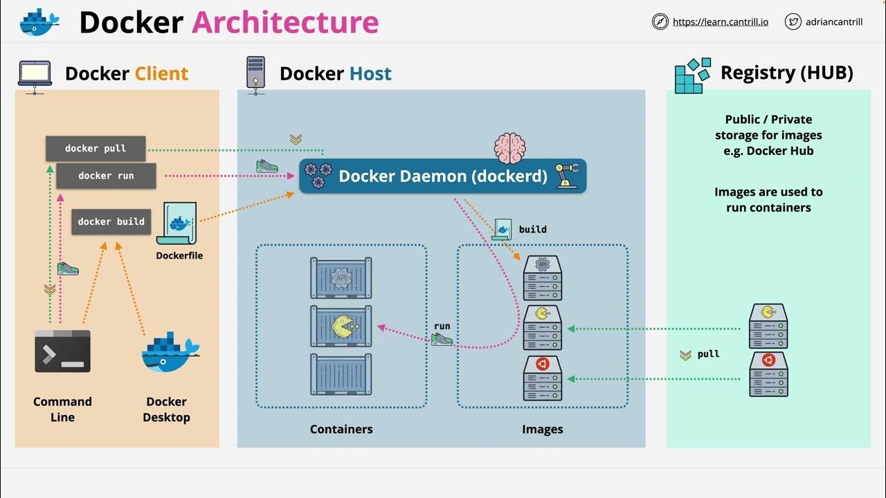
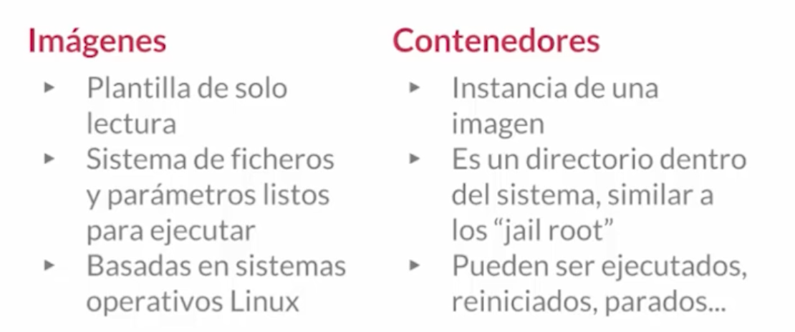
Instalación¶
Instalación en Ubuntu¶
https://www.digitalocean.com/community/tutorials/how-to-install-and-use-docker-on-ubuntu-20-04-es
Requisitos previos:
- apt-transport-https: permite que el administrador de paquetes transfiera datos a través de https
- ca-certificates: permite que el navegador web y el sistema verifiquen los certificados de seguridad
- curl: transfiere datos (similar a wget)
- software-properties-common: agrega scripts para administrar el software
1 | |
Agregamos repositorio
1 2 3 4 5 6 7 8 9 10 | |
Por defecto, el comando docker solo puede ser ejecutado por el usuario root o un usuario del grupo docker, que se crea automáticamente durante el proceso de instalación de Docker.
Para evitar escribir sudo al ejecutar el comando docker, agregue su nombre de usuario al grupo docker:
1 2 3 4 5 6 7 | |
Docker Desktop¶
¿Qué es Docker Desktop?¶

Es la aplicación oficial de Docker que te da una interfaz gráfica (GUI) para manejar contenedores, además de la línea de comandos.
¿Para qué sirve?¶
- Gestión visual: Ver contenedores, imágenes y volúmenes de forma gráfica
- Configuración fácil: Ajustar recursos (CPU, RAM) con sliders
- Monitorización: Ver en tiempo tiempo real qué está pasando
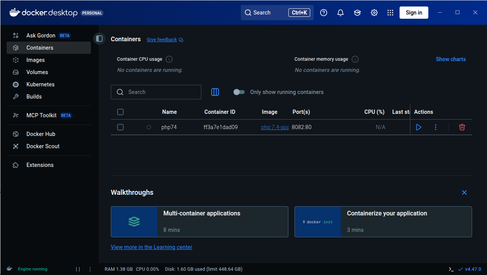
Compatibilidad por Sistema Operativo¶
🪟 Windows
- Windows 10/11 64-bit (versiones Home, Pro, Enterprise, Education)
- Requisitos importantes:
- Habilitar WSL 2 (Windows Subsystem for Linux)
- Virtualización activada en BIOS/UEFI
- Windows Home necesita WSL 2, Pro/Enterprise puede usar Hyper-V
🍎 macOS
- macOS 12 Monterey o superior
- Tipos de chip:
- Apple Silicon (M1, M2, M3, etc.)
- Intel con procesador de 2010 o más nuevo
- Necesita macOS actualizado
🐧 Linux (versión nativa)
- Distribuciones compatibles:
- Ubuntu 20.04 LTS o superior
- Debian 11 o superior
- Fedora 36 o superior
- Arch Linux (y derivados)
- Requisitos: kernel 5.10+, systemd, 64-bit
Guía Rápida de Instalación¶
Windows:
- Descarga desde docker.com/products/docker-desktop
- Ejecuta el instalador
.exe - Sigue el asistente (marca "Use WSL 2" si tienes Windows Home)
- Reinicia cuando termine
- ¡Listo! Docker se inicia automáticamente
macOS:
- Descarga desde la web oficial
- Arrastra Docker.app a la carpeta Applications
- Ejecuta desde Launchpad
- Autoriza con contraseña del sistema
- Espera a que configure todo (puede tardar unos minutos)
Linux (Ubuntu/Debian ejemplo):
1 2 3 4 5 6 7 8 | |
Problemas con Ubuntu 24.04
Si tienes problemas con Ubuntu 24.04, yo me he encontrado dos:
-
Problema de permisos
1 2 3
... S'estan processant els activadors per a desktop-file-utils (0.27-2build1)… N: La baixada es duu a terme fora de l'entorn segur com a root ja que el fitxer «/home/ubuntu/docker-desktop-4.27.2-amd64.deb» no és accessible per l'usuari «_apt». - pkgAcquire::Run (13: Permission denied)Lo he resuelto cambiando los permisos del deb:
1 2 3 4
# Change ownership of the file to make it accessible sudo chown _apt:root /home/ubuntu/docker-desktop-4.27.2-amd64.deb # Or alternatively, change permissions to make it readable sudo chmod 644 /home/ubuntu/docker-desktop-4.27.2-amd64.deb -
Lanzas Docker-desktop, aparece el icono, pero desaparece y la aplicación no incia: Parece un problema con un cambio en Ubuntu 24.04 que he resuelto con la información de este post:
1 2
sudo sysctl -w kernel.apparmor_restrict_unprivileged_userns=0 systemctl --user restart docker-desktopEn algunos casos parece que la solución anterior solo sirve hasta que reinicias, si es así, prueba esto también:
Crea un nuevo fichero:
1sudo nano /etc/apparmor.d/opt.docker-desktop.bin.com.docker.backendEscribe dentro el siguiente contenido:
1 2 3 4 5 6 7 8 9 10
abi <abi/4.0>, include <tunables/global> /opt/docker-desktop/bin/com.docker.backend flags=(default_allow) { userns, # Site-specific additions and overrides. See local/README for details. include if exists <local/opt.docker-desktop.bin.com.docker.backend> }Reinicia el servicio
apparmor.service:1sudo systemctl restart apparmor.service
Ventajas docker desktop (GUI) vs Línea de Comandos (CLI)¶
✅ Ventajas de Docker Desktop:
- Más fácil para empezar - Ideal para principiantes
- Todo integrado - No necesitas instalar nada más
- Debugging visual - Ves los logs y estados de un vistazo
- Gestión de recursos - Controlas CPU/RAM fácilmente
❌ Desventajas:
- Más pesado - Consume más recursos de tu PC
- Menos flexible - Algunas opciones avanzadas solo por comandos
- Dependes de la GUI - Si se cierra la app, pierdes la interfaz
🎯 Conclusión:
- Empezad con Docker Desktop para aprender sin frustraciones
- Aprended también los comandos básicos para ser más versátiles
- Usad ambos: la GUI para lo cotidiano y la terminal para lo avanzado
Uso¶
Comandos básicos¶
Gestión de imagenes¶
1 2 3 4 5 | |
Gestión de contenedores¶
1 2 3 4 5 6 7 8 9 10 11 12 13 14 15 | |
Ejemplo¶
1 2 3 4 5 6 7 8 9 10 11 12 13 14 15 16 17 18 19 20 21 22 23 24 | |
Crear contenedor interactivo y con nombre¶
https://jolthgs.wordpress.com/2019/09/25/create-a-debian-container-in-docker-for-development/
Para que docker no se invente un nombre como “pensive_wozniak” (comando anterior) podemos definir el nombre que queremos.
Utilizaremos una de las imágenes de: https://hub.docker.com/_/debian/tags
1 2 3 4 5 6 7 8 9 10 11 12 13 14 15 16 17 18 19 20 21 22 23 24 25 26 27 28 29 30 31 | |
Imágenes¶
Es un instalador donde podemos incorporar nuestra aplicación. Es el punto de inicio para crear contenedores. Hay imágenes oficiales de por ejemplo Ubuntu, Apache, etc, que fueron creadas por sus creadores oficiales.
Página oficial para imágenes: https://hub.docker.com
Vamos a utilizar la siguiente imagen para pruebas:
https://hub.docker.com/_/hello-world
Para ejecutar este contenedor “hello-word” escribimos en la terminal:
1 | |
Una vez ejecutado, ya dispondremos de la imagen descargada, podemos ver todas las imágenes que tenemos descargadas con:
1 2 3 4 | |
Desde la página web de docker hub, podemos ver diferentes versiones de la misma imagen en la pestaña “TAGS”
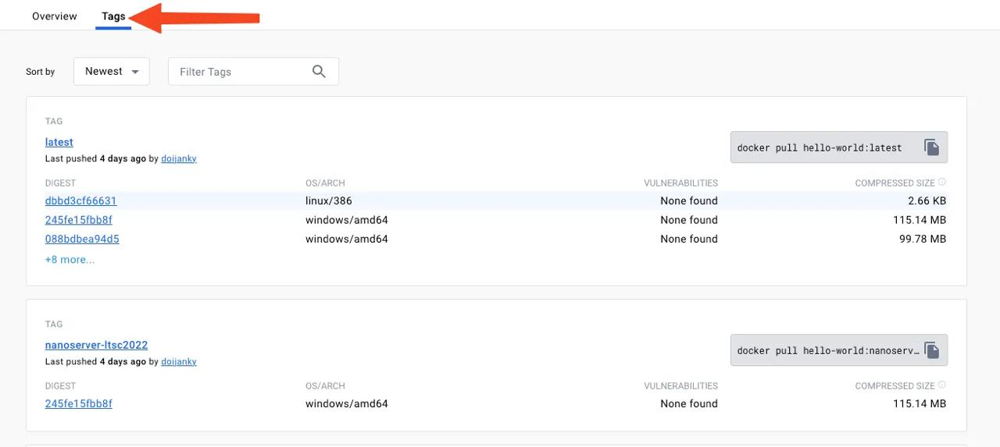
Podemos descargar una imagen específica y ejecutarla:
1 2 3 4 5 6 7 8 | |
Para eliminar una imagen utilizamos el parámetro rmi por ejemplo:
1 2 3 4 5 6 7 8 9 10 11 12 13 14 15 16 | |
También se pueden buscar imágenes desde consola.
1 2 3 4 5 6 7 8 9 10 11 12 13 14 15 | |
Volúmenes¶
Los volúmenes sirven para almacenar información de manera persistente en uno o varios contenedores. Es útil para que los archivos ya estén integrados en el propio contenedor y podamos disponer de dichos archivos en diferentes contenedores diferentes.
También nos permiten compartir archivos con el contenedor. Modificarlos en local y que se modifiquen en el contenedor.
Operaciones con volúmenes¶
1 2 3 4 5 6 7 8 9 10 11 12 13 14 15 16 17 18 19 20 21 22 23 24 25 26 27 | |
Ejemplo: compartir volúmenes con host¶
1 2 | |
Ejemplo: compartir volúmenes con contenedores¶
Vamos a crear un volumen para compartir archivos entre nuestro sistema de ficheros local y 2 contenedores (ubuntu y fedora).
1 2 3 4 5 6 7 8 9 10 11 12 13 14 15 16 17 18 19 20 21 22 23 24 | |
Diferencias docker-compose vs DockerFile¶
https://blog.elhacker.net/2022/01/gestion-contenedores-dockerfile-y-docker-compose.html
Docker Compose¶
Docker Compose es una herramienta que permite simplificar el uso de Docker. A partir de archivos YAML es mas sencillo crear contenedores, conectarlos, habilitar puertos, volúmenes, etc.
Con Compose puedes crear diferentes contenedores y al mismo tiempo, en cada contenedor, diferentes servicios, unirlos a un volúmen común, iniciarlos y apagarlos, etc. Es un componente fundamental para poder construir aplicaciones y microservicios
Parámetros docker-compose.yml
- “version ‘3’: Los archivos docker-compose.yml son versionados, lo que significa que es muy importante indicar la versión de las instrucciones que queremos darle. A medida de que Docker evoluciona, habrá nuevas versiones, pero de todos modos, siempre hay compatibilidad hacia atrás, al indicar la versión
- “build .”: Se utiliza para indicar donde está el Dockerfile que queremos utilizar para crear el contenedor. Al definier “.” automáticamente considerará el Dockerfile existente en directorio actual.
- “command”: Una vez creado el contenedor, aqui lanzamos el comando que permite ejecutar Jekyll, en modo servidor. El comando “–host 0.0.0.0” sirve para mapear el contenedor al sistema operativo host
- “ports”: mapeamos los puertos locales, por ejemplo 4000 (webserver jekyll) y 35729 (livereload) al servidor host. Esto permite que accediendo a Localhost:4000 podamos probar el sitio generador por Jekyll
- “volumes”: lo que hacemos es mapear el directorio local se mapee directamente con el /directoriox, lugar donde hemos creado la aplicación. De este modo, cualquier cambio en el directorio local en el host, se hará de inmediato en el contenedor.
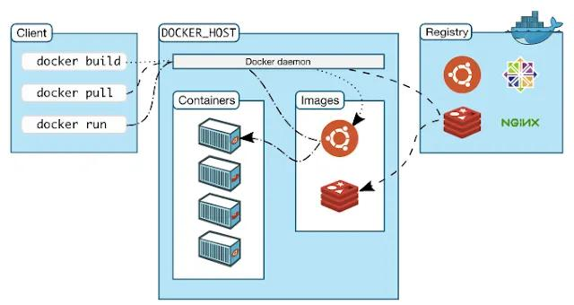
Ejemplo, creación contenedor con wordpress:
1 2 3 4 | |
1 2 3 4 5 6 7 8 9 10 11 12 13 14 15 16 17 18 19 20 21 22 23 24 25 26 27 28 29 30 31 32 33 34 35 36 37 38 39 40 41 42 43 44 45 | |
1 2 3 4 5 6 7 8 9 10 11 12 13 14 15 | |
Cuando creamos contenedores con docker sin indicar un nombre, por defecto asigna uno aleatorio; mientras que en Compose el prefijo es el nombre del directorio y el sufijo el nombre del servicio: wordpress_db_1. El número indica el número de instancia. Es posible levantar más de una instancia de un mismo servicio.
Equivalencia de parámetros
| parámetro Docker | parámetro Composer |
|---|---|
--mount | volumes |
-e | environment |
-p,--publish | ports |
| se escribe el nombre de la imágen | image |
Si reiniciamos el ordenador, los contenedores estarán detenidos (stop), podremos reiniciarlos con docker start o docker-compose start. Este es el comportamiento predeterminado y el que nos interesa en un entorno de desarrollo.
Sin embargo, en otros entornos, o para casos concretos, igual queremos que un contenedor tenga el mismo estado en el que estaba antes de reiniciar la máquina (iniciado o parado).
Para eso usaremos el parámetro restart. En el caso de la base de datos de nuestro ejemplo, la configuración quedaría como:
1 2 3 4 5 6 7 8 9 10 11 | |
Otros valores son: no (por defecto), always y on-failure.
DockerFile¶
Ejemplo básico
Nos ubicamos en la carpeta donde vayamos a trabajar con la imagen, por ejemplo voy a crear un directorio llamado docker-images.
Y creamos una archivo Dockerfile con un editor de texto.
1 2 3 4 | |
Creamos la imagen según las órdenes anteriores:
1 | |
Hay un error en el Dockerfile, corregir y volver a ejecutar el build.
Ya tenemos una imagen de ubuntu pero con python3 instalado:
1 2 3 4 5 6 7 | |
Una vez salimos podemos ver todas las “capas” de la imagen:
1 2 3 4 5 6 7 8 9 10 11 12 | |
Creación de imágenes propias¶
Para construir una imagen, se crea un Dockerfile con las instrucciones que especifican lo que va a ir en el entorno, dentro del contenedor (redes, volúmenes, puertos al exterior, archivos que se incluyen.
- Indica cómo y con qué construir la imagen.
- Podemos utilizar la imagen en tantos contenedores como queramos.
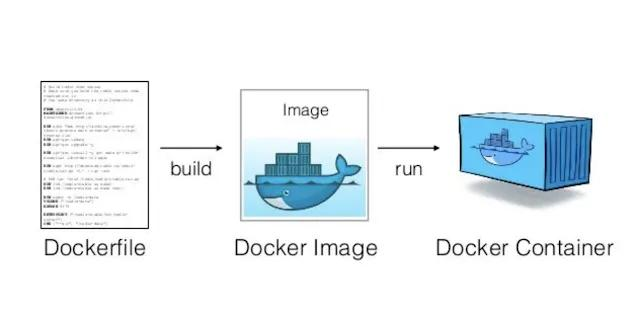
El DockerFile nos permitirá definir las funciones básicas del contenedor.
Todo Dockerfile debe terminar en un comando CMD o en un ENTRYPOINT, pero en este caso, no lo utilizamos, ya que lanzaremos un comando directamente desde la receta de DockerCompose. Es decir, este Dockerfile se utiliza solamente para construir el contenedor y configurarlo. No es auto-ejecutable.
Construir la imagen desde el Dockerfile
1 | |
Ejemplo:
1 | |
Parámetros importantes:
-t: Etiqueta (tag) para tu imagen.: Ruta donde está el Dockerfile (usualmente el directorio actual)
Crear y ejecutar el contenedor
1 | |
Ejemplo:
1 | |
Opciones¶
FROM
Imagen del sistema operativo donde va a correr el contenedor.
Consejo
Las versiones “Alpine linux” ocupan muy poco espacio.
RUN
El comando RUN se ejecuta cuando se está construyendo una imagen personalizada para realizar una acción, creando una capa nueva. Este comando tiene el siguiente formato:
1 | |
1 | |
Ejemplo en windows:
1 | |
COPY
Sirve para copiar archivos desde nuestra máquina al contenedor. Podemos pasar un documento de texto de la máquina anfitrión al contenedor de python-ubuntu.
1 2 3 4 | |
Volvemos a construir la imagen y accedemos a ella para buscar el archivo.
ENV
Podemos crear una variable y enviarla a nuestro contenedor, en mi caso por ejemplo voy a definir una variable llamada contenido que va a ir dirigida a un bloc de notas que está dentro del contenedor:
1 2 | |
Una vez regenerado la imagen y dentro del contenedor:
1 2 | |
Podemos combinar RUN con ENV
1 2 | |
WORKDIR
Nos situamos en un directorio determinado, nos puede ayudar en la copia de ficheros.
1 2 3 | |
EXPOSE
Permite exponer los puertos que queramos
LABEL
Creamos etiquetas, por ejemplo:
1 2 3 4 | |
USER
Sirve para establecer el usuario, debe existir. (Por defecto se utiliza root).
1 2 3 4 5 6 7 | |
CMD
Ejecuta comandos una vez se ha inicializado el conenedor (RUN se utiliza para crear la imagen de un contenedor).
1 2 3 | |
IGNORE
Sirve para ignorar aquello que tengamos en nuestro directorio actual.
Por ejemplo:
Creamos una imagen que copie todo nuestro directorio actual al contenedor.
1 2 | |
contenido de Dockerfile:
1 2 3 | |
Ahora le decimos que copie todo menos el archivo Dockerfile, para ello creamos un fichero llamado .dockerignore con el siguiente contenido
1 | |
Guardar estado de los contenedores¶
https://www.baeldung.com/ops/docker-save-container-state
Casos de uso¶
Compatibilidad de código entre diferentes versiones de un lenguaje¶
1 2 | |
Crear el siguiente archivo (test.php)
1 2 3 4 5 6 7 8 9 10 | |
A continuación vamos a crear dos contenedores que sirva este código usando imágenes distintas , para cada versión de PHP y usando puertos distintos para acceder a cada versión de la aplicación:
1 2 3 4 5 6 7 8 9 10 11 12 13 14 15 16 17 18 19 20 21 22 23 24 25 26 27 28 29 30 31 32 33 34 | |
Ahora lo intentaremos con una versión más reciente de php, la 7.4:
1 2 3 4 5 6 7 8 9 10 11 12 13 14 15 16 17 18 19 20 21 | |
El resultado desde el navegador debería ser similar a:
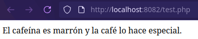
Crear una imagen de un repositorio de github¶
Ejemplo repositorio:
https://github.com/k4m4/kickthemout
Creamos el Dockerfile:
1 2 3 4 5 6 7 8 9 10 11 12 13 | |
Si ahora creamos nuestra imagen a partir del Dockerfile:
1 2 3 4 5 6 7 8 9 10 11 12 13 14 15 16 17 18 19 20 21 22 23 24 25 26 27 28 29 30 | |
A continuación podremos crear un nuevo contenedor usando esa imagen:
1 2 3 4 5 | |
Vemos que el script no encuentra la puerta de enlace, pero la imagen y el contenedor creados funcionan correctamente.
Dockerizar nuestro jupyter con carpeta para notebooks¶
Otra forma de levantar un contenedor con docker-compose es utilizar un Dockerfile para generar la imagen (en lugar de usar una de DockerHub)
Necesitamos una carpeta con la siguiente estructura:
1 2 3 4 5 | |
El fichero Dockerfile tiene el siguiente contenido:
1 2 3 4 5 6 7 8 9 10 | |
Ahora, para el docker-compose.yml tendremos:
1 2 3 4 5 6 7 8 | |
Y por último necesitamos el notebook para hacer pruebas, en nuestro caso es un juego de piedra, papel o tijeras:
rockpaperscissors.ipynb este fichero debemos guardarlo en la carpeta notebooks
Ahora con toda la estructura lista y desde la raiz de la carpeta (donde estan el docker-compose.yml y el Dockerfile) ejecutamos:
1 2 3 4 5 6 7 8 9 10 11 12 13 14 15 16 17 | |
Ahora podemos hacer click directamente sobre el enlace a http://127.0.0.1:8888/?token=bebf660273e8e168c7fec90978ed56fb50db6b08d915cb14 donde veremos nuestro jupyter notebook:
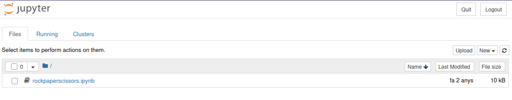
Si hacemos click sobre el notebook rockpaperscissors.ipynb podremos ver:
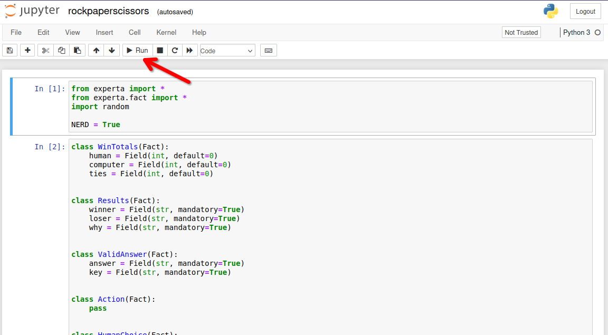
Después de pulsar varias veces (para ir ejecutando todas las celdas) podremos ver como evoluciona nuestro juego:
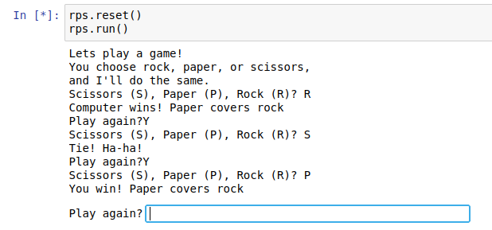
Para detener el contenedor que hemos lanzado con docker-compose, solo hemos de pulsar Ctrl+C
Crear una imagen personalizada¶
https://jolthgs.wordpress.com/2019/09/25/create-a-debian-container-in-docker-for-development/
Para crear una imagen personalizada utilizaremos el contenedor que habíamos creado en el primer ejemplo, con una debian actualizada y con un fichero de texto prueba.txt
1 2 3 4 5 6 7 8 9 10 11 12 13 14 15 16 17 18 19 20 21 22 23 24 25 26 27 | |
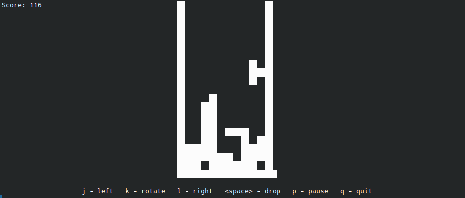
Copias de seguridad¶
Copias de contenedores¶
Ya estén encendidos o apagados, podemos realizar respaldos de seguridad de los contenedores. Utilizando la opción “export” empaquetará el contenido, generando un fichero con extensión “.tar” de la siguiente manera:
1 | |
o
1 | |
Restauración de copias de seguridad de contenedores¶
Hay que tener en cuenta, antes de nada, que no es posible restaurar el contenedor directamente, de forma automática. En cambio, sí podemos crear una imagen, a partir de un respaldo de un contenedor, mediante el parámetro “import” de la siguiente manera:
1 | |
Copias de imágenes¶
Aunque no tiene mucho sentido por que se bajan muy rápido, también tenemos la posibilidad de realizar copias de seguridad de imágenes. El proceso se realiza al utilizar el parámetro ‘save‘, que empaquetará el contenido y generará un fichero con extensión “tar“, así:
1 | |
o
1 | |
Restaurar copias de seguridad de imágenes¶
Con el parámetro ‘load’, podemos restaurar copias de seguridad en formato ‘.tar’ y de esta manera recuperar la imagen.
1 | |
Contenedores ejemplo¶
Monitorización y Gestión¶
- Netdata - Monitorización de sistemas en tiempo real con dashboard web completo
- Glances - Monitorización del sistema via web que muestra información de CPU, memoria, red y procesos
- Portainer - Interfaz web para gestionar y administrar contenedores Docker
- Uptime Kuma - Monitor de disponibilidad para verificar el estado de contenedores y servicios
Proxy y Red¶
- Nginx Proxy Manager - Proxy inverso con interfaz web para gestionar hosts virtuales y certificados SSL/TLS
- Acestream - Motor P2P para streaming de video, útil para integrar canales en Jellyfin
- Libreddit - Interfaz alternativa para Reddit libre de publicidad y tracking (modo lectura)
- Invidious - Interfaz alternativa para YouTube que respeta la privacidad
Multimedia y Entretenimiento¶
- Jellyfin - Servidor multimedia libre para organizar y streaming de películas, series y música
- Soulseek - Cliente para la red P2P Soulseek especializada en compartir música
- youtube-dl - Herramienta para descargar videos y audio de YouTube y otros sitios
- Photoprism - Servicio de gestión y visualización de fotos personales con funciones de IA
Productividad y Organización¶
- Nextcloud - Plataforma de colaboración y almacenamiento en la nube auto-alojado
- Linkding - Marcador social para guardar y organizar enlaces web
- GitBucket - Plataforma Git auto-alojada similar a GitHub
- SearXNG - Metabuscador privado que agrega resultados de múltiples motores de búsqueda
Seguridad y Contraseñas¶
- Vaultwarden - Implementación alternativa del gestor de contraseñas Bitwarden, más ligera y eficiente
Automatización del Hogar¶
- Home Assistant - Plataforma de domótica de código abierto para automatizar y controlar dispositivos del hogar
- Homebridge - Puente que permite integrar dispositivos no compatibles con el ecosistema Apple HomeKit
- Camera.UI - Aplicación para gestionar y visualizar cámaras de seguridad con integración HomeKit
Utilidades y Mantenimiento¶
- Homepage - Dashboard personalizable como página de inicio para acceder a todos los servicios
- Watchtower - Servicio que actualiza automáticamente los contenedores Docker cuando hay nuevas versiones disponibles
Ejercicios¶
Ejercicio1¶
Instala docker desktop en tu PC. Guarda una captura de pantalla que demuestre que funciona en tu PC.
Ejercicio2¶
Asegúrate de que puedes reproducir todos los casos de uso vistos más arriba. Guarda varias capturas de pantalla donde se pueda ver que han funcionado los diferentes casos.
Ejercicio 3¶
Crea 2 contenedores, uno con python 3.11 y otro con python 3.9. Explica los pasos que has seguido para conseguirlo y muestra pantalla con los contenedores funcionando.
Ejercicio 4¶
Elige alguna de las imágenes propuestas en los Contenedores de ejemplo (o cualquiera a tu elección de DockerHub), escribe un docker-compose.yml y muéstralo con capturas y en funcionamiento en la memoria en PDF.
Tarea entregable¶
Recopila todas las capturas y explicaciones de los 4 ejercicios en una memoria en PDF que justifique todo el trabajo realizado.